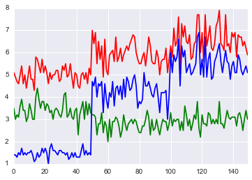
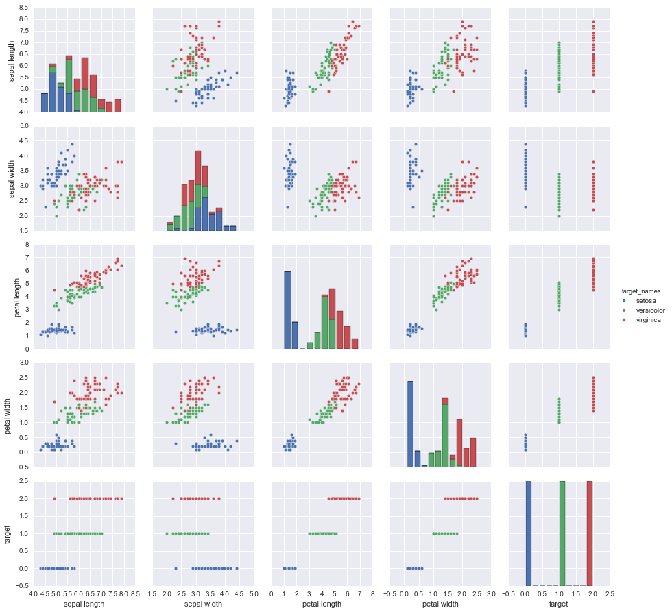

corr_pair_scatter¶
In [1]:
# http://qiita.com/ksomemo/items/69ae8eec98b795781586(load datasets in python)
In [2]:
import numpy as np
import pandas as pd
import matplotlib
import matplotlib.pyplot as plt
import seaborn as sns
%matplotlib inline
In [3]:
from sklearn import datasets
iris = datasets.load_iris()
# cm邪魔なので削除
columns = map(lambda c: c.replace(" (cm)", ""), iris.feature_names[:4])
iris_data = pd.DataFrame(iris.data, columns=columns)
iris_data["target"] = pd.Series(iris.target)
iris_data["target_names"] = iris_data["target"].apply(lambda x: iris.target_names[x])
iris_data.tail()
Out[3]:
| sepal length | sepal width | petal length | petal width | target | target_names | |
|---|---|---|---|---|---|---|
| 145 | 6.7 | 3.0 | 5.2 | 2.3 | 2 | virginica |
| 146 | 6.3 | 2.5 | 5.0 | 1.9 | 2 | virginica |
| 147 | 6.5 | 3.0 | 5.2 | 2.0 | 2 | virginica |
| 148 | 6.2 | 3.4 | 5.4 | 2.3 | 2 | virginica |
| 149 | 5.9 | 3.0 | 5.1 | 1.8 | 2 | virginica |
In [7]:
iris_data_feature = iris_data[iris_data.columns[:4]]
iris_data_feature.tail()
Out[7]:
| sepal length | sepal width | petal length | petal width | |
|---|---|---|---|---|
| 145 | 6.7 | 3.0 | 5.2 | 2.3 |
| 146 | 6.3 | 2.5 | 5.0 | 1.9 |
| 147 | 6.5 | 3.0 | 5.2 | 2.0 |
| 148 | 6.2 | 3.4 | 5.4 | 2.3 |
| 149 | 5.9 | 3.0 | 5.1 | 1.8 |
In [20]:
iris_data.groupby("target_names").describe()
Out[20]:
| petal length | petal width | sepal length | sepal width | target | ||
|---|---|---|---|---|---|---|
| target_names | ||||||
| setosa | count | 50.000000 | 50.000000 | 50.000000 | 50.000000 | 50 |
| mean | 1.464000 | 0.244000 | 5.006000 | 3.418000 | 0 | |
| std | 0.173511 | 0.107210 | 0.352490 | 0.381024 | 0 | |
| min | 1.000000 | 0.100000 | 4.300000 | 2.300000 | 0 | |
| 25% | 1.400000 | 0.200000 | 4.800000 | 3.125000 | 0 | |
| 50% | 1.500000 | 0.200000 | 5.000000 | 3.400000 | 0 | |
| 75% | 1.575000 | 0.300000 | 5.200000 | 3.675000 | 0 | |
| max | 1.900000 | 0.600000 | 5.800000 | 4.400000 | 0 | |
| versicolor | count | 50.000000 | 50.000000 | 50.000000 | 50.000000 | 50 |
| mean | 4.260000 | 1.326000 | 5.936000 | 2.770000 | 1 | |
| std | 0.469911 | 0.197753 | 0.516171 | 0.313798 | 0 | |
| min | 3.000000 | 1.000000 | 4.900000 | 2.000000 | 1 | |
| 25% | 4.000000 | 1.200000 | 5.600000 | 2.525000 | 1 | |
| 50% | 4.350000 | 1.300000 | 5.900000 | 2.800000 | 1 | |
| 75% | 4.600000 | 1.500000 | 6.300000 | 3.000000 | 1 | |
| max | 5.100000 | 1.800000 | 7.000000 | 3.400000 | 1 | |
| virginica | count | 50.000000 | 50.000000 | 50.000000 | 50.000000 | 50 |
| mean | 5.552000 | 2.026000 | 6.588000 | 2.974000 | 2 | |
| std | 0.551895 | 0.274650 | 0.635880 | 0.322497 | 0 | |
| min | 4.500000 | 1.400000 | 4.900000 | 2.200000 | 2 | |
| 25% | 5.100000 | 1.800000 | 6.225000 | 2.800000 | 2 | |
| 50% | 5.550000 | 2.000000 | 6.500000 | 3.000000 | 2 | |
| 75% | 5.875000 | 2.300000 | 6.900000 | 3.175000 | 2 | |
| max | 6.900000 | 2.500000 | 7.900000 | 3.800000 | 2 |
In [8]:
iris_data.target_names.value_counts().plot.bar()
Out[8]:
<matplotlib.axes._subplots.AxesSubplot at 0x118f846d8>

In [9]:
iris_data_feature.plot.scatter(x="sepal length", y="sepal width")
Out[9]:
<matplotlib.axes._subplots.AxesSubplot at 0x11900b0b8>

In [10]:
iris_data_feature["sepal length"].plot.line()
iris_data_feature["sepal width"].plot.line(secondary_y=True)
Out[10]:
<matplotlib.axes._subplots.AxesSubplot at 0x1190bb4a8>

In [11]:
with pd.plot_params.use('x_compat', True):
iris_data_feature["sepal length"].plot(color='r')
iris_data_feature["sepal width"].plot(color='g')
iris_data_feature["petal length"].plot(color='b')

In [12]:
iris_data_feature.plot(subplots=True, figsize=(16, 8), layout=(2, 2))
Out[12]:
array([[<matplotlib.axes._subplots.AxesSubplot object at 0x1195c12e8>,
<matplotlib.axes._subplots.AxesSubplot object at 0x11c4067b8>],
[<matplotlib.axes._subplots.AxesSubplot object at 0x11c4324a8>,
<matplotlib.axes._subplots.AxesSubplot object at 0x11c542cf8>]], dtype=object)

In [13]:
iris_data_feature.corr()
Out[13]:
| sepal length | sepal width | petal length | petal width | |
|---|---|---|---|---|
| sepal length | 1.000000 | -0.109369 | 0.871754 | 0.817954 |
| sepal width | -0.109369 | 1.000000 | -0.420516 | -0.356544 |
| petal length | 0.871754 | -0.420516 | 1.000000 | 0.962757 |
| petal width | 0.817954 | -0.356544 | 0.962757 | 1.000000 |
In [14]:
iris_data_feature.corr(method="kendall")
Out[14]:
| sepal length | sepal width | petal length | petal width | |
|---|---|---|---|---|
| sepal length | 1.000000 | -0.072112 | 0.717624 | 0.654960 |
| sepal width | -0.072112 | 1.000000 | -0.182391 | -0.146988 |
| petal length | 0.717624 | -0.182391 | 1.000000 | 0.803014 |
| petal width | 0.654960 | -0.146988 | 0.803014 | 1.000000 |
In [15]:
iris_data_feature.corr(method="spearman")
Out[15]:
| sepal length | sepal width | petal length | petal width | |
|---|---|---|---|---|
| sepal length | 1.000000 | -0.159457 | 0.881386 | 0.834421 |
| sepal width | -0.159457 | 1.000000 | -0.303421 | -0.277511 |
| petal length | 0.881386 | -0.303421 | 1.000000 | 0.936003 |
| petal width | 0.834421 | -0.277511 | 0.936003 | 1.000000 |
In [16]:
from pandas.tools.plotting import scatter_matrix
scatter_matrix(iris_data_feature, alpha=0.2, figsize=(6, 6), diagonal='kde')
Out[16]:
array([[<matplotlib.axes._subplots.AxesSubplot object at 0x11caccf28>,
<matplotlib.axes._subplots.AxesSubplot object at 0x11cd9eb70>,
<matplotlib.axes._subplots.AxesSubplot object at 0x11d3f25f8>,
<matplotlib.axes._subplots.AxesSubplot object at 0x11d42ce80>],
[<matplotlib.axes._subplots.AxesSubplot object at 0x11d479630>,
<matplotlib.axes._subplots.AxesSubplot object at 0x11d4bb208>,
<matplotlib.axes._subplots.AxesSubplot object at 0x11d503f28>,
<matplotlib.axes._subplots.AxesSubplot object at 0x11d543c88>],
[<matplotlib.axes._subplots.AxesSubplot object at 0x11d595470>,
<matplotlib.axes._subplots.AxesSubplot object at 0x11d5dccc0>,
<matplotlib.axes._subplots.AxesSubplot object at 0x11d72b390>,
<matplotlib.axes._subplots.AxesSubplot object at 0x11d772b00>],
[<matplotlib.axes._subplots.AxesSubplot object at 0x11d7b0d30>,
<matplotlib.axes._subplots.AxesSubplot object at 0x11d7fbd68>,
<matplotlib.axes._subplots.AxesSubplot object at 0x11d937c50>,
<matplotlib.axes._subplots.AxesSubplot object at 0x11d988a20>]], dtype=object)

In [19]:
# sns.pairplot(iris_data, hue='target')
sns.pairplot(iris_data, hue='target_names')
Out[19]:
<seaborn.axisgrid.PairGrid at 0x11cac6550>

In [18]:
price = pd.Series(np.random.randn(150).cumsum(), index=pd.date_range('2000-1-1', periods=150, freq='B'))